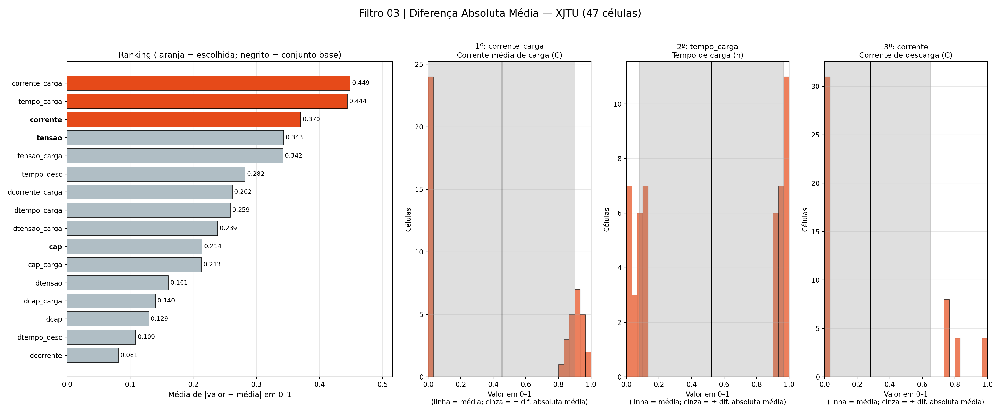
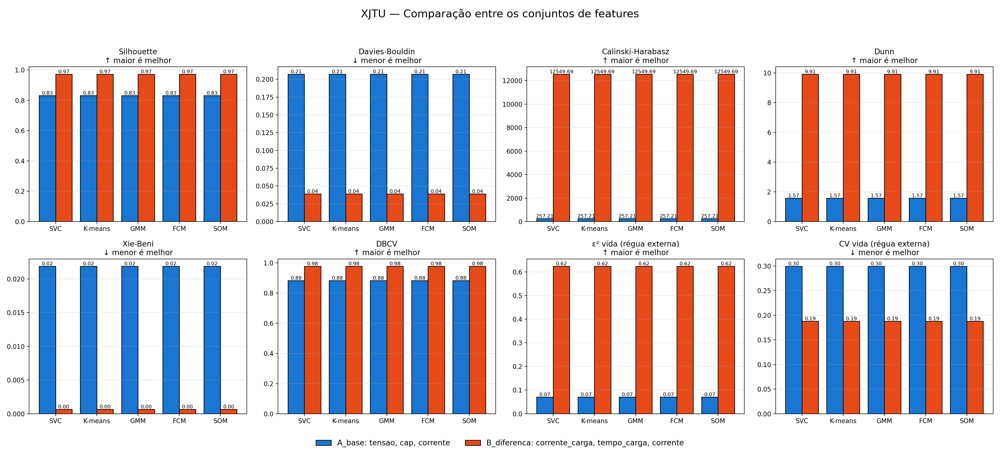
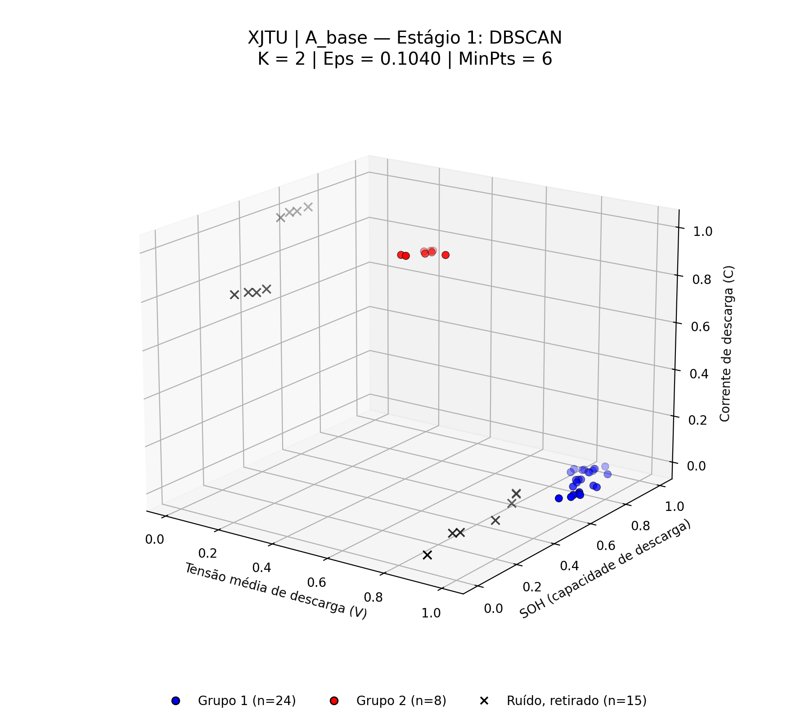
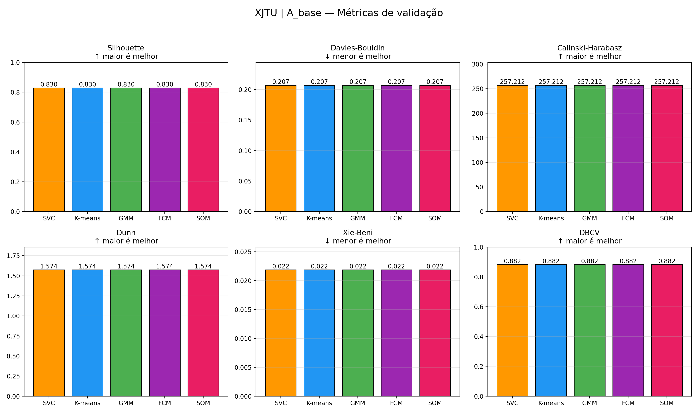
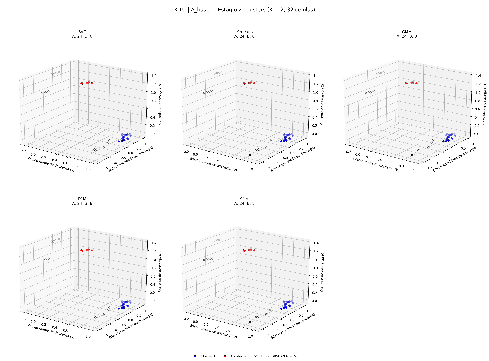
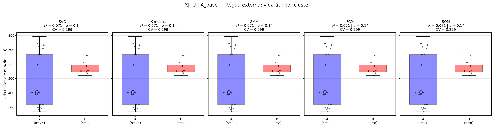
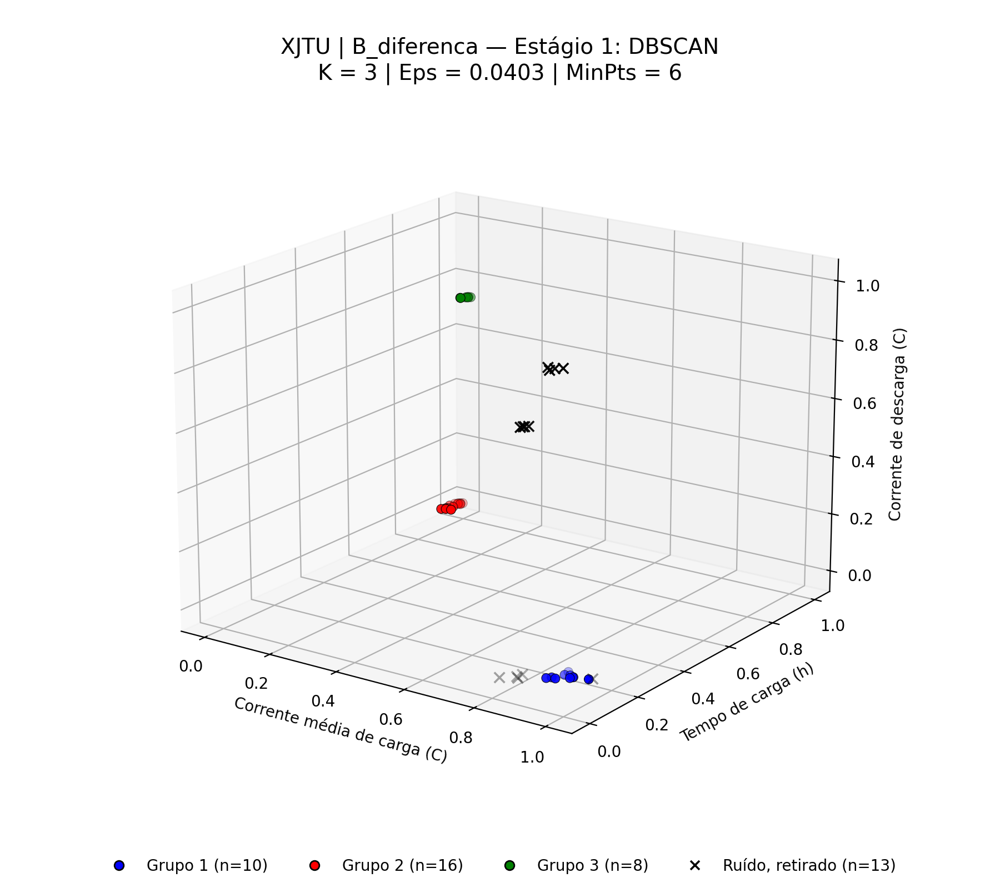
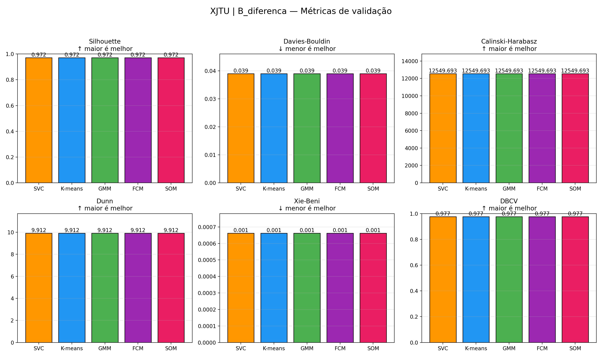
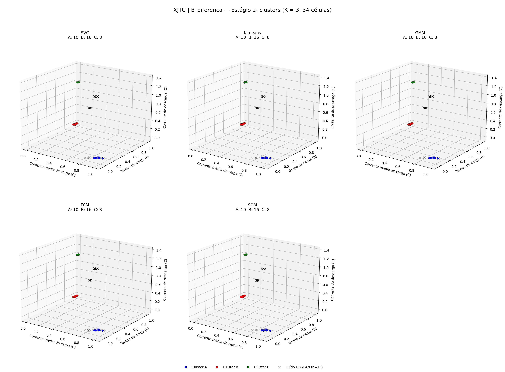
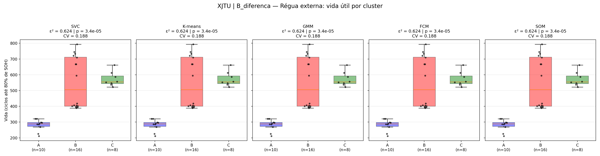

Seleção por filtro 03: Diferença Absoluta Média (XJTU)
O filtro Diferença Absoluta Média ordena as features candidatas pela diferença absoluta média (em 0–1); as 3 maiores notas formam o conjunto B_diferenca, comparado com o conjunto base no mesmo teste (DBSCAN + 5 algoritmos, mesmas células).
A_base: tensao,cap,corrente · B_diferenca: corrente_carga,tempo_carga,corrente
ciclos 6–10 e 96–100 · MinPts = 6 · K = do DBSCAN · régua externa: vida útil (ε² do Kruskal-Wallis e CV), que não participou da escolha das features
Resumo
| teste | features | células | ruído | células no estágio 2 | K DBSCAN | K usado | Eps | maior silhueta | maior ε² vida | situação |
|---|---|---|---|---|---|---|---|---|---|---|
| A_base | tensao, cap, corrente | 47 | 15 | 32 | 2 | 2 | 0.104 | SVC | SVC (0.071) | ok |
| B_diferenca | corrente_carga, tempo_carga, corrente | 47 | 13 | 34 | 3 | 3 | 0.0403 | SVC | SVC (0.624) | ok |
Seleção das features: Diferença Absoluta Média
Escolhidas: corrente_carga, tempo_carga, corrente · base: tensao, cap, corrente

Ranking completo
| posição | feature | descrição | Diferença Absoluta Média | situação | no conjunto base |
|---|---|---|---|---|---|
| 1 | corrente_carga | Corrente média de carga (C) | 0.4488 | escolhida | |
| 2 | tempo_carga | Tempo de carga (h) | 0.4443 | escolhida | |
| 3 | corrente | Corrente de descarga (C) | 0.3703 | escolhida | sim |
| 4 | tensao | Tensão média de descarga (V) | 0.3434 | sim | |
| 5 | tensao_carga | Tensão média de carga (V) | 0.3423 | ||
| 6 | tempo_desc | Tempo de descarga (h) | 0.2823 | ||
| 7 | dcorrente_carga | Δ Corrente média de carga (C) | 0.2616 | ||
| 8 | dtempo_carga | Δ Tempo de carga (h) | 0.2587 | ||
| 9 | dtensao_carga | Δ Tensão média de carga (V) | 0.2385 | ||
| 10 | cap | SOH (capacidade de descarga) | 0.2139 | sim | |
| 11 | cap_carga | Capacidade de carga / nominal | 0.2130 | ||
| 12 | dtensao | Δ Tensão média de descarga (V) | 0.1608 | ||
| 13 | dcap_carga | Δ Capacidade de carga / nominal | 0.1403 | ||
| 14 | dcap | Δ SOH (capacidade de descarga) | 0.1293 | ||
| 15 | dtempo_desc | Δ Tempo de descarga (h) | 0.1086 | ||
| 16 | dcorrente | Δ Corrente de descarga (C) | 0.0813 |
Comparação entre os conjuntos

Placar: em quantos algoritmos cada conjunto ganhou cada métrica
| A_base | B_diferenca | |
|---|---|---|
| métrica | ||
| Silhouette | 0 | 5 |
| Davies-Bouldin | 0 | 5 |
| Calinski-Harabasz | 0 | 5 |
| Dunn | 0 | 5 |
| Xie-Beni | 0 | 5 |
| DBCV | 0 | 5 |
| ε² vida | 0 | 5 |
| CV vida | 0 | 5 |
| TOTAL internas | 0 | 30 |
| TOTAL régua da vida | 0 | 10 |
A_base: tensao, cap, corrente
células: 47 · ruído: 15 · células no estágio 2: 32 · K DBSCAN: 2 · K usado: 2 · Eps: 0.104 · maior ε² vida: SVC (0.071)
Situação: ok




Tabela de métricas
| Silhouette | Davies-Bouldin | Calinski-Harabasz | Dunn | Xie-Beni | DBCV | ε² vida | p (Kruskal-Wallis) | CV vida | |
|---|---|---|---|---|---|---|---|---|---|
| SVC | 0.83 | 0.2072 | 257.2121 | 1.5736 | 0.0219 | 0.8824 | 0.0707 | 0.1389 | 0.2992 |
| K-means | 0.83 | 0.2072 | 257.2121 | 1.5736 | 0.0219 | 0.8824 | 0.0707 | 0.1389 | 0.2992 |
| GMM | 0.83 | 0.2072 | 257.2121 | 1.5736 | 0.0219 | 0.8824 | 0.0707 | 0.1389 | 0.2992 |
| FCM | 0.83 | 0.2072 | 257.2121 | 1.5736 | 0.0219 | 0.8824 | 0.0707 | 0.1389 | 0.2992 |
| SOM | 0.83 | 0.2072 | 257.2121 | 1.5736 | 0.0219 | 0.8824 | 0.0707 | 0.1389 | 0.2992 |
B_diferenca: corrente_carga, tempo_carga, corrente
células: 47 · ruído: 13 · células no estágio 2: 34 · K DBSCAN: 3 · K usado: 3 · Eps: 0.0403 · maior ε² vida: SVC (0.624)
Situação: ok




Tabela de métricas
| Silhouette | Davies-Bouldin | Calinski-Harabasz | Dunn | Xie-Beni | DBCV | ε² vida | p (Kruskal-Wallis) | CV vida | |
|---|---|---|---|---|---|---|---|---|---|
| SVC | 0.9719 | 0.039 | 12549.6929 | 9.9122 | 0.0007 | 0.9769 | 0.6239 | 0.0 | 0.1876 |
| K-means | 0.9719 | 0.039 | 12549.6929 | 9.9122 | 0.0007 | 0.9769 | 0.6239 | 0.0 | 0.1876 |
| GMM | 0.9719 | 0.039 | 12549.6929 | 9.9122 | 0.0007 | 0.9769 | 0.6239 | 0.0 | 0.1876 |
| FCM | 0.9719 | 0.039 | 12549.6929 | 9.9122 | 0.0007 | 0.9769 | 0.6239 | 0.0 | 0.1876 |
| SOM | 0.9719 | 0.039 | 12549.6929 | 9.9122 | 0.0007 | 0.9769 | 0.6239 | 0.0 | 0.1876 |